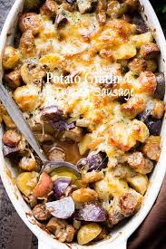

Back To Recipes
-Kielbasa and Potato Bake-
An easy variation of the now classic brunch potato bake that includes a very tender Kielbasa.

Ingredients Needed:
- 1 (10.75 ounce) can condensed cream of mushroom soup
- 2 cups milk
- 1 tablespoon minced garlic
- 1 teaspoon salt
- ½ teaspoon ground black pepper
- 1 pound kielbasa sausage, sliced thin
- 4 large russet potatoes, peeled and cubed
Steps For Cooking:
- Preheat oven to 375 degrees F (190 degrees C).
- In a large mixing bowl, mix together soup, milk, garlic, salt, and pepper.
- Stir in potatoes and kielbasa and mix thoroughly.
- Spoon into a 7x11 inch casserole dish and spread evenly.
- Place casserole on a baking sheet, and bake in the preheated oven for 90 minutes, or until potatoes are tender.
- Dish and enjoy the meal.
Nutritional Value:
Per Serving:
- 352 calories
- protein 12g
- carbohydrates 33.3g
- fat 19.1g
- cholesterol 42.3mg
- sodium 1363.9mg